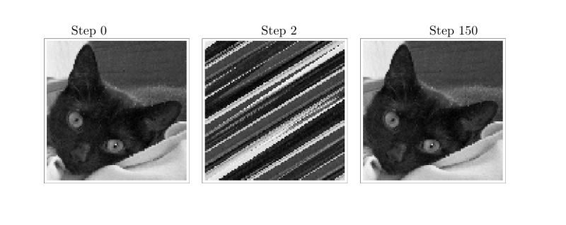

Arnold's Cat Map
each day i want to take one mathematical idea and explain it as simply as i can, starting from something concrete. today: arnold's cat map.
start with a square sheet of pizza dough. poke small holes in it. each hole is a point, and the pattern of holes is a picture.
stretch the dough. holes higher up move more sideways than holes lower down. holes further right move more upward than holes on the left. then fold: anything that escapes the square on the right wraps back in from the left, anything that escapes at the top wraps back in from the bottom. every hole ends up somewhere inside the square, and no two holes land in the same place.
the precise rule is this. a point $(x, y)$ moves to:
$$\begin{pmatrix} 2 & 1 \\ 1 & 1 \end{pmatrix} \begin{pmatrix} x \\ y \end{pmatrix} \pmod{1}$$the matrix stretches. the $\pmod{1}$ folds. the determinant is $2 \cdot 1 - 1 \cdot 1 = 1$, so the transformation preserves area exactly. no dough is lost, none is gained.
what does the stretching actually do? the matrix has two eigenvalues, $\lambda_+ = \frac{3 + \sqrt{5}}{2} \approx 2.618$ and $\lambda_- = \frac{3 - \sqrt{5}}{2} \approx 0.382$. notice that $\lambda_+ \cdot \lambda_- = 1$, which is just the determinant again. the eigenvectors point in two special directions: one direction gets stretched by a factor of $\lambda_+$ at every step, the other gets compressed by the same factor. the stretching direction tilts at an irrational angle to the square's sides, which is precisely why the folding mixes things so thoroughly. if the angle were rational, the stretched filaments would line up neatly and the mixing would be poor. the irrationality is doing real work.
repeat the stretch and fold. very quickly, the original pattern looks scrambled, holes spread into thin layers across the dough. but nothing random happened. every hole followed a precise rule.

this is the right moment to say what chaos actually means here, because the word is often used loosely. the cat map is chaotic in a precise sense: it has sensitive dependence on initial conditions. take two holes that start extremely close together, say at distance $\varepsilon$ apart. after $n$ steps, their separation grows like $\lambda_+^n \cdot \varepsilon$. since $\lambda_+ > 1$, this grows exponentially. after enough steps, two holes that started arbitrarily close are spread arbitrarily far apart, modulo the folding. this is not a metaphor or an approximation. it is a theorem. the quantity $\log \lambda_+ = \log \frac{3 + \sqrt{5}}{2}$ is called the lyapunov exponent of the map, and it measures exactly how fast nearby points diverge.
and yet, because the rule is invertible and area-preserving, repeating it long enough eventually returns the picture exactly to where it started. this is not obvious, and it deserves an argument.
the map acts on rational points $\left(\frac{p}{n}, \frac{q}{n}\right)$ inside the unit square. for a fixed $n$, there are exactly $n^2$ such points. the map sends distinct points to distinct points, since the matrix is invertible. so it is a bijection on a finite set. any bijection on a finite set must eventually cycle: apply it enough times and you return to the start. the picture is just such a finite set of points, so it too must return.
the period depends on $n$. for $n = 2$ the picture returns after 3 steps. for $n = 3$ it takes 4. for larger $n$ the period grows, but it is always finite.
so the cat map is simultaneously two things that feel contradictory: a system so sensitive that arbitrarily close points eventually end up far apart, and a system so rigid that every configuration eventually retraces its steps exactly. these are not in tension. they are both consequences of the same linear algebra. the exponential stretching and the finite periodicity are two sides of the same coin, one describes what happens in the short run, the other in the very long run.
vladimir arnold introduced this map in the 1960s using an actual photograph of a cat, which is where the name comes from. it became a standard example in the study of dynamical systems: a transformation that is perfectly deterministic and reversible, yet produces behaviour that looks, for all practical purposes, like chaos.